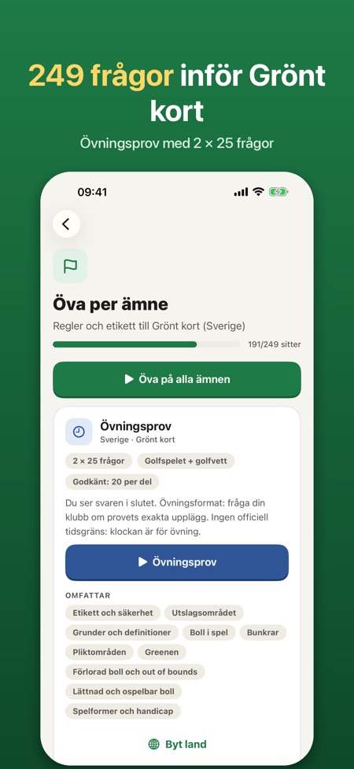
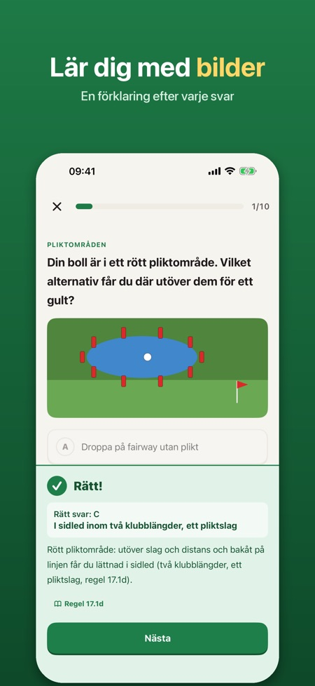
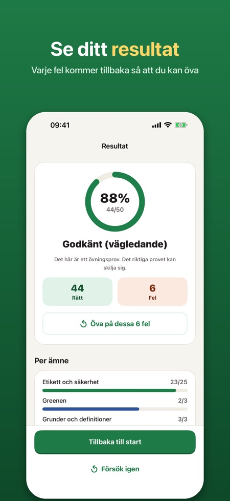

Gör dig redo för kunskapstestet för Grönt kort, som du gör innan du får spela på en golfbana. Varje svar har en förklaring.



Det är kunskapstestet du gör innan du får spela på en golfbana. Appen hjälper dig att öva inför det.
249 frågor i 10 ämnen.
Två delar om 25 frågor (golfspelet och golfvett), minst 20 rätt per del.
Nej. Alla frågor och regelsammanfattningar är skrivna av oss, och appen är inte knuten till Svenska Golfförbundet. Det riktiga testet gör du i Min Golf.
Ja, välj land så kommer frågorna på språket i det landets prov.
Nej, du låser upp allt med ett köp. Tio smakprovsfrågor, ett kort övningsprov, regeluppslaget och checklistan ingår utan köp.
Ja, den fungerar utan internet, utan konto och utan reklam.
Gör dig redo för kunskapstestet för Grönt kort, som du gör innan du får spela på en golfbana. Betala en gång, ingen prenumeration.
DET HÄR INGÅR
• 249 frågor i 10 ämnen: etikett och säkerhet, utslagsområdet, grunder, boll i spel, bunkrar, pliktområden, greenen, förlorad boll och out of bounds, lättnad och ospelbar boll, spelformer och handicap
• Bildfrågor med ritade situationer från banan (pliktområden, gränspinnar, utslagsområdet, asfalterad väg)
• Förklaring efter varje svar, på svenska, engelska, norska, finska eller tyska
• Övningsprov i samma format som kunskapstestet: två delar om 25 frågor (golfspelet och golfvett), minst 20 rätt per del
• Dina fel kommer tillbaka tills du har svarat rätt två gånger i rad
• Regeluppslag: korta svar med enkla ord på ”Vad gör jag när …?”, med regelnummer
• Checklista för första rundan: vad du tar med och hur du uppför dig på banan
ÄVEN FÖR NORGE, FINLAND OCH ÖSTERRIKE
Välj land så kommer frågorna på språket i det landets prov.
RIMLIGT PRIS
Tio smakprovsfrågor, ett kort övningsprov, regeluppslaget och checklistan ingår utan köp. Lås upp allt med ett köp. Ingen prenumeration, ingen reklam, inget konto. Fungerar utan internet.
Övningsprovet är träning; det riktiga testet gör du i Min Golf.
Appen är fristående och inte knuten till Svenska Golfförbundet, The R&A eller USGA. Alla frågor och regelsammanfattningar är skrivna av oss; de är inte officiella provfrågor eller regeltext.